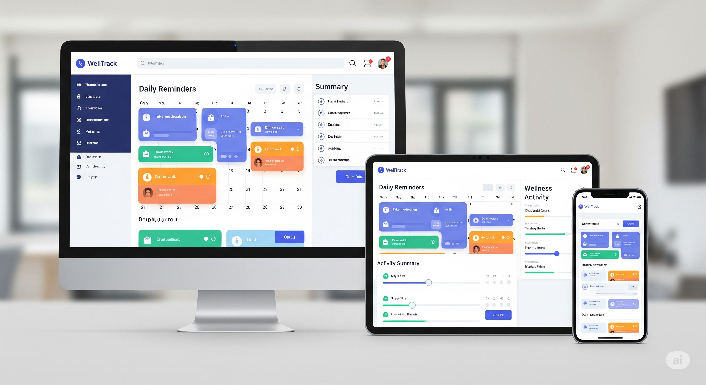

Featured Projects




Enjoy building thoughtful, user-friendly (and sometimes just plain cute) tech. From web development and UI/UX design to machine learning, I love the satisfaction of bringing an idea to life.
Spoiler: I sometimes make random, adorable websites that serve no purpose other than making me smile. Not everything needs to be socially relevant... right?
I'm a tech enthusiast currently pursuing my B.Tech at Toc H Institute of Science and Technology — where I juggle between web development, ML, and UI/UX design.
My passion lies in creating interesting, user-friendly tech solutions. Whether it's crafting elegant websites, designing intuitive interfaces, or exploring amusing tech sites, I find tinkering with a variety of stuff enjoyable.
I'm always interested in hearing about new projects and opportunities.